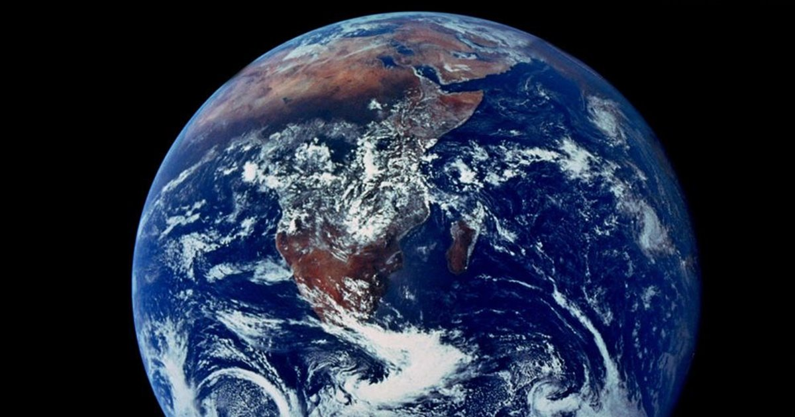

Curiosidades sobre el espacio



- 1. La luz tarda 8 minutos y 17 segundos en viajar desde el Sol hasta la superficie terrestre.
- 2. La Tierra rota a una velocidad de 1.609 km/h, pero se desplaza a través del espacio a la increíble velocidad de 107.826 km/h.
- 3. Alrededor de 100 rayos alcanzan la Tierra cada segundo.
- 4. Si el Sol midiese tan solo una pulgada de diámetro (2,54 cm), la estrella más cercana se encontraría a 716 km de distancia.
- 5. Los astronautas no pueden eructar porque la ingravidez no permite la separación de líquido y gas en sus estómagos.
- 6. Dentro de 5 mil millones de años el Sol se quedará sin combustible y se convertirá en una Gigante Roja.
- 7. Las galaxias más grandes contienen un billón de estrellas.
- 8. Las estrellas de neutrones son tan densas que una sola cucharadita sería más pesada que toda la población terrestre.